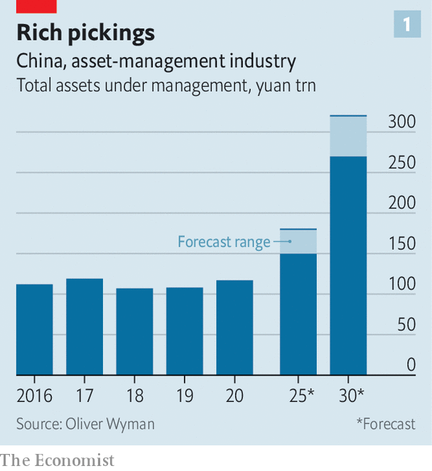
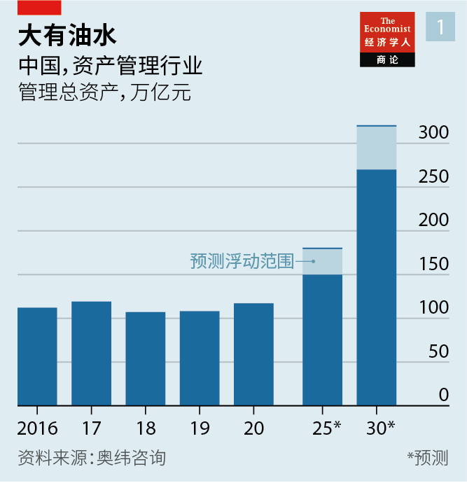
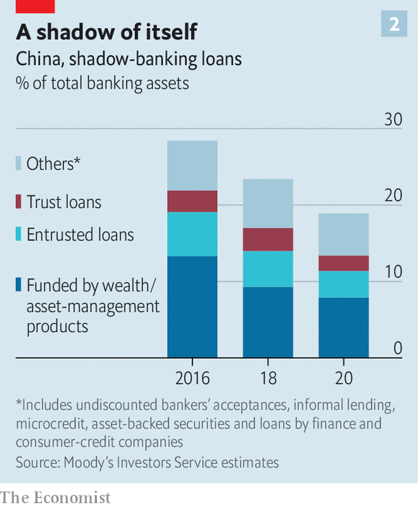
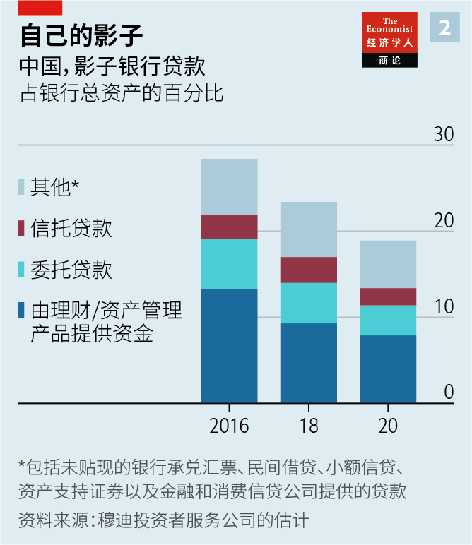

2021-06-23T15:39:28+00:00
Chasing pots of gold
追逐金罐幻影
追逐金罐幻影
Foreign asset managers are eyeing China’s vast pool of savings
外国资产管理公司盯上了中国的巨额存款
外國資產管理公司盯上了中國的巨額存款
Do they stand a chance against home-grown competitors?
它们有可能战胜本土竞争对手吗?
它們有可能戰勝本土競爭對手嗎?
ZHANG KUN is the rock star of Chinese fund management. His name often makes headlines;whole articles are dedicated to his investment calls. Investors vie to get into his funds, one of which has reportedly delivered a return of 700% since it was launched eight years ago. He is among a growing number of managers who generate more hype than the firms that employ them. With personalities like Mr Zhang on its payroll, E-Fund, a state-owned investment group, hardly needs to advertise.
张坤是中国基金管理界的明星。他的名字常常登上新闻头条；整篇整篇的报道谈论他的投资决策。投资者争相认购他管理的基金——据报道，他的一只基金自八年前推出以来已实现了700%的回报率。如今，像张坤这样风头盖过了自己任职的公司的基金经理越来越多。有了张坤这样的明星员工，国有投资集团易方达几乎都不用做广告。
張坤是中國基金管理界的明星。他的名字常常登上新聞頭條；整篇整篇的報道談論他的投資決策。投資者爭相認購他管理的基金——據報道，他的一隻基金自八年前推出以來已實現了700%的回報率。如今，像張坤這樣風頭蓋過了自己任職的公司的基金經理越來越多。有了張坤這樣的明星員工，國有投資集團易方達幾乎都不用做廣告。
Now a swathe of foreign firms hopes to take on Mr Zhang and his ilk by entering China’s asset-management industry. Last month Goldman Sachs, a Wall Street bank, announced a wealth-management venture with ICBC, China’s largest commercial lender by assets. BlackRock, a giant American asset manager, will join forces with China Construction Bank (CCB). Amundi, a French firm, has linked up with Bank of China and Schroders, a British investment group, with China’s Bank of Communications. In March JPMorgan Asset Management said it would buy a 10% stake in China Merchant Bank’s wealth business. Nearly 20 global investors are setting up fund-management firms; others are launching private securities funds.
现在，许多外国公司希望进入中国的资产管理行业，与张坤及其同行一较高下。上个月，华尔街银行高盛宣布与中国资产规模最大的商业银行工商银行成立合资理财公司。美国资产管理巨头贝莱德（BlackRock）将与中国建设银行联手。法国公司东方汇理（Amundi）、英国投资集团施罗德（Schroders）分别与中国银行、中国交通银行建立了合作关系。今年3月，摩根大通资产管理公司表示将收购招商银行理财子公司10%的股份。近20家全球投资公司正在中国设立基金管理公司，另一些则在推出私募证券基金。
現在，許多外國公司希望進入中國的資產管理行業，與張坤及其同行一較高下。上個月，華爾街銀行高盛宣布與中國資產規模最大的商業銀行工商銀行成立合資理財公司。美國資產管理巨頭貝萊德（BlackRock）將與中國建設銀行聯手。法國公司東方匯理（Amundi）、英國投資集團施羅德（Schroders）分別與中國銀行、中國交通銀行建立了合作關係。今年3月，摩根大通資產管理公司表示將收購招商銀行理財子公司10%的股份。近20家全球投資公司正在中國設立基金管理公司，另一些則在推出私募證券基金。
The prize is access to a pot of money worth 120trn yuan ($18.8trn), which includes investments made by everyone from the average saver to the ultra-rich in mutual funds, trusts, wealth and other asset-management products. Though the pool of funds is smaller than in the West—asset managers in North America oversaw $59trn last year, according to PwC, an accounting firm—it is expected to expand rapidly. As more people grow comfortable giving their money to managers instead of picking stocks or buying property, China’s pot could nearly treble, hitting 320trn yuan by 2030, reckons Oliver Wyman, a consultancy (see chart 1). But foreigners’ attempts to crack other parts of China’s financial market have yielded underwhelming results. Could this time be different?
进入中国资产管理行业的好处是能接触到其中120万亿元人民币（18.8万亿美元）的巨额资金，包括从普通储户到超级富豪的各色人等对共同基金、信托产品、理财以及其他资产管理产品的投资。尽管这一资金规模小于西方——会计公司普华永道称北美的资产管理公司去年管理着59万亿美元的资金——但预期会迅速扩大。奥纬咨询（Oliver Wyman）估计，随着越来越多的人更放心把自己的钱交给投资经理，而不是自己选股或买房产，到2030年，中国的资金规模可能增加近两倍，达到320万亿元（见图表1）。但是，外国公司试图打入中国金融市场其他领域的尝试都没有得到令人满意的结果。这次会有所不同吗?
進入中國資產管理行業的好處是能接觸到其中120萬億元人民幣（18.8萬億美元）的巨額資金，包括從普通儲戶到超級富豪的各色人等對共同基金、信託產品、理財以及其他資產管理產品的投資。儘管這一資金規模小於西方——會計公司普華永道稱北美的資產管理公司去年管理着59萬億美元的資金——但預期會迅速擴大。奧緯諮詢（Oliver Wyman）估計，隨着越來越多的人更放心把自己的錢交給投資經理，而不是自己選股或買房產，到2030年，中國的資金規模可能增加近兩倍，達到320萬億元（見圖表1）。但是，外國公司試圖打入中國金融市場其他領域的嘗試都沒有得到令人滿意的結果。這次會有所不同嗎?
For China’s regulators, the new ventures are a high-stakes experiment meant to transform how savers think about investing. For years retail investors ploughed cash into deposit-like investment products sold and backed by state banks. The principal on such products was considered guaranteed, but the banks funnelled the cash towards high-risk borrowers such as small property developers or coal-mining outfits. By 2016 the banks’ wealth-management arms oversaw around 13% of total banking assets (see chart 2). But regulators cracked down, no longer willing to see banks and ordinary savers exposed to the intensifying risks.
对中国监管机构来说，设立这些新的合资企业是高风险的实验，意在改变储户对投资的认知。多年来，散户投资者购买国有银行发售或背书的类似存款的理财产品，他们认为这类产品的本金是有保障的，但银行把这些资金输送给了小型房地产开发商或煤矿企业等高风险的借款方。到2016年，银行的财富管理部门管理的资金占到银行总资产的13%左右（见图表2）。但是监管机构不愿再看着银行和普通储户面临的风险日益加剧，于是出手严厉整治。
對中國監管機構來說，設立這些新的合資企業是高風險的實驗，意在改變儲戶對投資的認知。多年來，散戶投資者購買國有銀行發售或背書的類似存款的理財產品，他們認為這類產品的本金是有保障的，但銀行把這些資金輸送給了小型房地產開發商或煤礦企業等高風險的借款方。到2016年，銀行的財富管理部門管理的資金佔到銀行總資產的13%左右（見圖表2）。但是監管機構不願再看着銀行和普通儲戶面臨的風險日益加劇，於是出手嚴厲整治。
Guaranteed products have been banned. Meanwhile banks’ wealth assets have been spun into new subsidiaries. These must wind down the old deposit-like products and design new ones based on net asset value. In 2020 the new units had 26trn yuan in assets under management, reckons CICC, an investment bank. It is with them that foreign investors have been invited to establish joint ventures.
保本理财产品已被取缔。与此同时，财富管理部门从银行剥离出来，成为新的子公司。这些子公司必须逐步减少过去那些类似存款的理财产品，并设计基于资产净值的新产品。投资银行中金公司估计，2020年，这些新子公司管理的资产达到了26万亿元。外国投资机构正是受邀和这些子公司成立合资公司。
保本理財產品已被取締。與此同時，財富管理部門從銀行剝離出來，成為新的子公司。這些子公司必須逐步減少過去那些類似存款的理財產品，並設計基於資產凈值的新產品。投資銀行中金公司估計，2020年，這些新子公司管理的資產達到了26萬億元。外國投資機構正是受邀和這些子公司成立合資公司。
The call sounds familiar. Foreign financiers have been knocking at China’s door for generations, with an eye to every corner of the industry, from retail banking to securities. In 1995 CCB and Morgan Stanley, another Wall Street bank, set up CICC; in 2004 Goldman was allowed to establish the first foreign securities joint venture. But when you look back over the past two decades, the developments seem underwhelming and the returns meagre.
这种呼唤似曾相识。几代外国金融家都在敲中国市场的大门，他们看上了这个行业从零售银行到证券的每个角落。1995年，中国建设银行和另一家华尔街银行摩根士丹利成立了中金公司；2004年，高盛获准成立了中国第一家外国合资证券公司。但回顾过去20年会发现，事情的发展似乎不尽如人意，回报也很有限。
這種呼喚似曾相識。幾代外國金融家都在敲中國市場的大門，他們看上了這個行業從零售銀行到證券的每個角落。1995年，中國建設銀行和另一家華爾街銀行摩根士丹利成立了中金公司；2004年，高盛獲准成立了中國第一家外國合資證券公司。但回顧過去20年會發現，事情的發展似乎不盡如人意，回報也很有限。
That was largely because China opened up only when home-grown firms were big enough to withstand competition. Some foreign retail banks launched gung-ho expansion plans only to quit the market later, defeated by domestic giants’ extensive branch networks. Securities joint ventures have taken more than a decade to pass majority control to foreign investors. Payments firms such as Visa and Mastercard were shut out until mobile payments became dominant and competition futile.
这在很大程度上是因为中国只有在本土企业发展壮大到足以抵御竞争时才会对外开放。一些外国零售银行推出了狂热的扩张计划，后来却被国内银行巨头庞大的支行网络击败，退出了市场。在合资证券公司，外国投资者花了十几年时间才获得多数控股权。Visa和万事达等支付公司一直被拦在门外，直到移动支付变成了主导支付手段，竞争已变得徒有其名。
這在很大程度上是因為中國只有在本土企業發展壯大到足以抵禦競爭時才會對外開放。一些外國零售銀行推出了狂熱的擴張計劃，後來卻被國內銀行巨頭龐大的支行網絡擊敗，退出了市場。在合資證券公司，外國投資者花了十幾年時間才獲得多數控股權。Visa和萬事達等支付公司一直被攔在門外，直到移動支付變成了主導支付手段，競爭已變得徒有其名。
Wealth management could be different. For one, the foreigners do not face a mature market with insurmountable competition. Regulators’ sweeping reforms mean that they are in fact entering what could become the world’s largest market for retail wealth at an early stage.
财富管理可能会有所不同。首先，外资企业面对的并不是一个难以赢得竞争的成熟市场。监管机构的全面改革意味着它们是于早期阶段进入一个日后可能是世界最大的零售理财市场。
財富管理可能會有所不同。首先，外資企業面對的並不是一個難以贏得競爭的成熟市場。監管機構的全面改革意味着它們是於早期階段進入一個日後可能是世界最大的零售理財市場。
This is evident in the financial products on offer today. China’s mutual-fund industry has grown at a fantastic pace in recent years. Many firms now oversee 1trn yuan in assets. Money-market funds are ubiquitous. But product design is still in its infancy. Global firms are expected to bring a new level of sophistication. Tuan Lam of Goldman says his group will offer quantitative products such as algorithmic and factor-based strategies, and cross-border and alternative-asset investments. “These are not present in China right now,” he notes.
这一点在目前提供的金融产品中就体现得很明显。近年来，中国共同基金行业的发展速度惊人。许多公司现在管理着一万亿元的资产。货币市场基金比比皆是。但产品设计仍很稚嫩。人们期待全球公司能够带来更成熟高级的产品。高盛的段林表示，高盛将提供基于因子的算法策略等量化产品，以及跨境和另类资产投资。“目前中国还没有这些产品。”他指出。
這一點在目前提供的金融產品中就體現得很明顯。近年來，中國共同基金行業的發展速度驚人。許多公司現在管理着一萬億元的資產。貨幣市場基金比比皆是。但產品設計仍很稚嫩。人們期待全球公司能夠帶來更成熟高級的產品。高盛的段林表示，高盛將提供基於因子的算法策略等量化產品，以及跨境和另類資產投資。“目前中國還沒有這些產品。”他指出。
Another benefit of the joint ventures is their links to China’s largest financial firms. The banks and their tens of thousands of branches were key intermediaries during the first era of wealth management and, say experts, may also define the next. Their wealth-management subsidiaries have vast portfolios and huge numbers of clients. Take CCB. It has more than 14,700 branches; last year it managed 2.2trn yuan in wealth-management products and attracted more than 4.4m new investment and wealth-management clients. Access to customers is “one of the benefits of partnering with one of the largest banks in China”, says Susan Chan of BlackRock.
成立合资公司的另一个好处是能与中国最大的几家金融公司建立联系。在财富管理的第一个时代，这些银行及其数以万计的支行是关键的中间环节，而且据专家们说，它们可能也会定义下一个时代。它们的理财子公司拥有大量投资组合和庞大客户群。以建行为例，它拥有超过1.47万家支行，去年它管理了2.2万亿元的理财产品，吸引了440多万名新的投资和理财客户。能接触客户是“与这家中国最大银行之一合作的一个好处”，贝莱德的陈蕙兰表示。
成立合資公司的另一個好處是能與中國最大的幾家金融公司建立聯繫。在財富管理的第一個時代，這些銀行及其數以萬計的支行是關鍵的中間環節，而且據專家們說，它們可能也會定義下一個時代。它們的理財子公司擁有大量投資組合和龐大客戶群。以建行為例，它擁有超過1.47萬家支行，去年它管理了2.2萬億元的理財產品，吸引了440多萬名新的投資和理財客戶。能接觸客戶是“與這家中國最大銀行之一合作的一個好處”，貝萊德的陳蕙蘭表示。
Yet success will depend on foreigners’ ability to establish and market themselves. Goldman and BlackRock have some name recognition in China by virtue of their size. Amundi and Schroders, by contrast, are unknown outside financial circles. And teaming up with home-grown banks has some downsides. A potential customer at a bank branch will be offered a suite of products, which will include those designed and branded by the joint ventures, but also those designed solely by the bank. Online, joint-venture offerings will probably appear on smartphone apps on a list of commoditised products. The foreign groups will therefore have to make sure their offering is advertised sufficiently to clients—no easy task given that tens of thousands of banks’ relationship managers will be responsible for sales. It can be done, but only with hefty investment in staff training, says Philip Leung of Bain, a consultancy.
然而，成功与否将取决于外国公司能否站稳脚跟并做好营销。高盛和贝莱德凭借自身规模在中国已经有了一定的知名度。相比之下，东方汇理和施罗德在金融界之外还鲜为人知。与本土银行合作也有一些缺点。银行的支行会向潜在客户提供一系列产品，其中既包括合资公司设计并冠以自己品牌的产品，也包括银行自己单独设计的产品。在线上，合资公司的产品可能会出现在智能手机应用里，与一长串同质化的产品并列。因此，外资公司必须确保能向客户充分宣传自己的产品。这绝非易事，因为会有数以万计的银行客户经理负责销售。贝恩咨询公司的梁霭中认为这是可以做到的，但前提是在员工培训方面投入巨资。
然而，成功與否將取決於外國公司能否站穩腳跟並做好營銷。高盛和貝萊德憑藉自身規模在中國已經有了一定的知名度。相比之下，東方匯理和施羅德在金融界之外還鮮為人知。與本土銀行合作也有一些缺點。銀行的支行會向潛在客戶提供一系列產品，其中既包括合資公司設計並冠以自己品牌的產品，也包括銀行自己單獨設計的產品。在線上，合資公司的產品可能會出現在智能手機應用里，與一長串同質化的產品並列。因此，外資公司必須確保能向客戶充分宣傳自己的產品。這絕非易事，因為會有數以萬計的銀行客戶經理負責銷售。貝恩諮詢公司的梁靄中認為這是可以做到的，但前提是在員工培訓方面投入巨資。
Another problem is competing with superstars such as Mr Zhang, who often manage money for giant mutual funds. Financial news in China is abuzz with stories on the performance of star managers. Many retail investors make decisions based on such information. Few clients are interested in a fund’s risk controls, notes Fabrice Maraval, an executive who has worked at two Sino-foreign financial ventures. Instead, they ask, “What’s your ranking on the list of top fund managers?”, he says.
另一个难题是与像张坤这样的超级明星们竞争，他们大多为大型共同基金管理资金。中国的财经新闻充斥着有关明星经理业绩的报道。许多散户投资者根据这类信息做决策。很少有客户关注基金的风险控制，曾在两家中外合资金融公司工作过的高管法布里斯·马拉瓦尔（Fabrice Maraval）指出。相反，他说，他们常常会问“你在顶级基金经理名单上排第几？”
另一個難題是與像張坤這樣的超級明星們競爭，他們大多為大型共同基金管理資金。中國的財經新聞充斥着有關明星經理業績的報道。許多散戶投資者根據這類信息做決策。很少有客戶關注基金的風險控制，曾在兩家中外合資金融公司工作過的高管法布里斯·馬拉瓦爾（Fabrice Maraval）指出。相反，他說，他們常常會問“你在頂級基金經理名單上排第幾？”
Executives at several joint ventures bristle at the idea of hiring stars who market their funds. “It’s just not our culture,” says one. Instead they must slowly build trust with clients through solid performance and prudent risk controls. Zhong Xiaofeng of Amundi describes his group’s strategy in China as a “long-haul effort”. If foreigners are to give the stars a run for their money, it will have to be. ■
几家合资公司的高管对于聘请明星经理来营销基金的主意感到愤怒。“这就不是我们的文化。”其中一人表示。相反，它们必须通过稳健的业绩和审慎的风险控制逐步赢得客户的信任。东方汇理的钟晓峰用“漫长的努力”来描述自己的公司在中国的战略。如果外国公司不想输给这些明星，那将不得不如此。
幾家合資公司的高管對於聘請明星經理來營銷基金的主意感到憤怒。“這就不是我們的文化。”其中一人表示。相反，它們必須通過穩健的業績和審慎的風險控制逐步贏得客戶的信任。東方匯理的鐘曉峰用“漫長的努力”來描述自己的公司在中國的戰略。如果外國公司不想輸給這些明星，那將不得不如此。